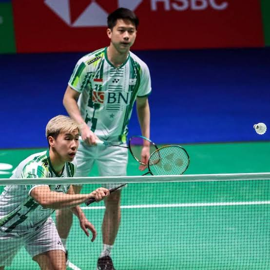

FAUZAN UTA

FAUZAN UTA |
|
|||
 |
BADMINTON OLAHRAGA KESUKAAN KUBermain badminton membutuhkan kecepatan, kelincahan, konsentrasi, dan strategi untuk mengalahkan lawan. Dengan rutin bermain badminton, saya dapat melatih koordinasi tubuh, meningkatkan stamina, serta belajar tentang kerja keras dan sportivitas. Tapi kalian tau gak sih sejarah badminton? yuk kita bahas. Sejarah Singkat Badminton Jadi Badminton atau bulu tangkis berasal dari permainan kuno yang berkembang di berbagai negara. Olahraga modern ini mulai populer di Inggris pada abad ke-19 dan kemudian menyebar ke seluruh dunia. Badminton resmi menjadi olahraga Olimpiade pada tahun 1992. Di Indonesia, badminton menjadi salah satu olahraga favorit yang banyak mengharumkan nama bangsa di tingkat internasional. Jadi gitu sejarah singkatnya kalian juga suka main badminton atau tidak teman? aku biasanya bermain badminton kalau punya waktu luang, terutama bersama teman-temanku. Kegiatan ini membuat aku lebih aktif, mengurangi rasa bosan, dan memberikan pengalaman yang menyenangkan.Badminton atau bulu tangkis merupakan olahraga yang aku sukai karena menyenangkan sekaligus menyehatkan tubuh. Olahraga ini dapat dimainkan bersama teman maupun keluarga, sehingga selain berolahraga, aku juga bisa mempererat hubungan dengan orang lain. |
| <==Baca artikel lainnya |